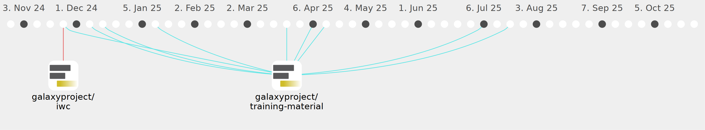

katherine-d21

Commits all-time: 309
Commits last year: 207

(207)
- f00f176
- 651640a
- 44be067
- d476df4
- bfb761f
- 667082c
- a0f73c7
- 89f82da
- ab36f41
- 95b967a
- 804dc65
- 4bfb6d5
- e897753
- c14380f
- 2a54259
- f5b7221
- ce87e8b
- c30dccd
- b42c10c
- 3dcd720
- 8238605
- d5f278d
- a01d891
- cc4c556
- d757fad
- a48a47a
- aacc5c9
- b9bf5af
- d8a9e10
- 6304fa1
- ea5a996
- cfe7463
- 4cc3ed7
- e386927
- 91d6df6
- cd3f3a0
- c877ca7
- 26e60ee
- 2efec24
- 468e65a
- 95d4ea9
- fcc308e
- 15c6c0c
- 8b18a32
- c184a3b
- d043d0d
- fb2042b
- d0744a8
- eff7d61
- 759db42
- 5107f51
- b26e740
- 773d86a
- 842b736
- a29d493
- cb0afe9
- e9ebbaa
- b877037
- e580bb0
- 5a06198
- 22a30ff
- 9af0744
- b8158ec
- b8b7308
- ba1a2af
- ef6f436
- 8653cc2
- 36b65da
- 9b54e1e
- 133738b
- b6511b2
- c233bd0
- 9e4508c
- f4e2f78
- 68e99d1
- dad4884
- fc8db96
- 7a582bf
- 62bcef2
- b272d2b
- a162712
- be1bc21
- 46c39d0
- 8e29d52
- d17960e
- 044dcc4
- 68800a2
- 6dda1d3
- 262c612
- 1497a11
- 4833d36
- 2d99e7b
- ddc11c0
- 8c416f5
- eb34102
- aa2202d
- ee5ddf5
- 957568f
- 9e59430
- 4a482b3
- a9e3751
- a1cd17c
- 7284e6e
- 9353ed9
- fc7ae62
- c488d76
- a8ca347
- 574e4f7
- 1945b7b
- 42f61af
- b339b2a
- 57f372d
- 32d8b94
- 197cc6a
- 473415c
- 958068b
- ceb04cf
- 384dde6
- 91c2ca2
- d3eecca
- dbd1aaf
- bef6f3c
- 34c1298
- 11844a8
- a566eab
- ea4e134
- 3006efd
- 74f22a1
- d33eb5b
- 0d30ec9
- 509a236
- a7956e6
- 3b654fc
- 388fff3
- 22f343f
- 659d8ca
- 473faf3
- ed49613
- a288a28
- a875d9e
- d154997
- 346d975
- 0ccb180
- 722da69
- 07e9a75
- 88a7815
- 20b5249
- e89041a
- 23a6424
- 67d1f9b
- 3d74005
- 9e308a5
- c66fb67
- 0f551df
- 5a2e1a0
- 8b73ed5
- aacbff0
- 6158b0a
- 1aa1303
- 6129868
- 9975887
- 6cba48e
- 52ca82c
- fcbb526
- 0f6d2af
- 53c83a2
- 2ddec71
- 79ad0e2
- 6dee103
- 4c33d8a
- 71c2c79
- 9041ecb
- a6d258e
- 5fcf352
- c9ed1fb
- d0a00f0
- 8772bb3
- 0637b3f
- b21c276
- f89a72b
- 419aeab
- ea6e997
- f3ba79e
- 0d12b7e
- 1fda848
- bda0de8
- 0a6309c
- 3cba46e
- 0963fe5
- 68c170d
- 9b8722f
- a67e6d7
- aad6e23
- 62fadff
- 9f10ced
- a5792de
- d22edd4
- fac01c8
- c9cfe7c
- ca8ae75
- 09aa79b
- e88a62c
- a8493d2
- 91c6afb
- 1d26038
- a0b0a54
- 6e76df6